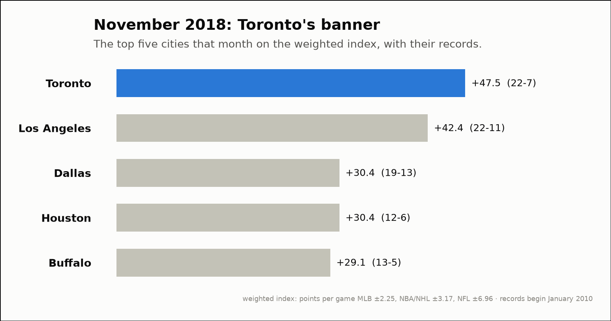

November 2018: the banner went to Toronto
8 years ago this month — Blue Jays/Raptors/Maple Leafs, +5.1 clear of Los Angeles
- November 2018 banner
- Toronto: Blue Jays/Raptors/Maple Leafs — 22-7, +47.5 weighted
- Runner-up
- Los Angeles: Angels/Clippers/Ducks/Chargers — 22-11, +42.4 weighted
- Who carried it
- Raptors — 12-3, +28.5 weighted
- Toronto this November, through day 21
- 48th of 48 — 3-17, -44.3 weighted
| Place | City | Teams | Record | Weighted |
|---|---|---|---|---|
| 1 | Toronto | Blue Jays/Raptors/Maple Leafs | 22-7 | +47.5 |
| 2 | Los Angeles | Angels/Clippers/Ducks/Chargers | 22-11 | +42.4 |
| 3 | Dallas | Rangers/Mavericks/Stars/Cowboys | 19-13 | +30.4 |
| 4 | Houston | Astros/Rockets/Texans | 12-6 | +30.4 |
| 5 | Buffalo | Sabres/Bills | 13-5 | +29.1 |
